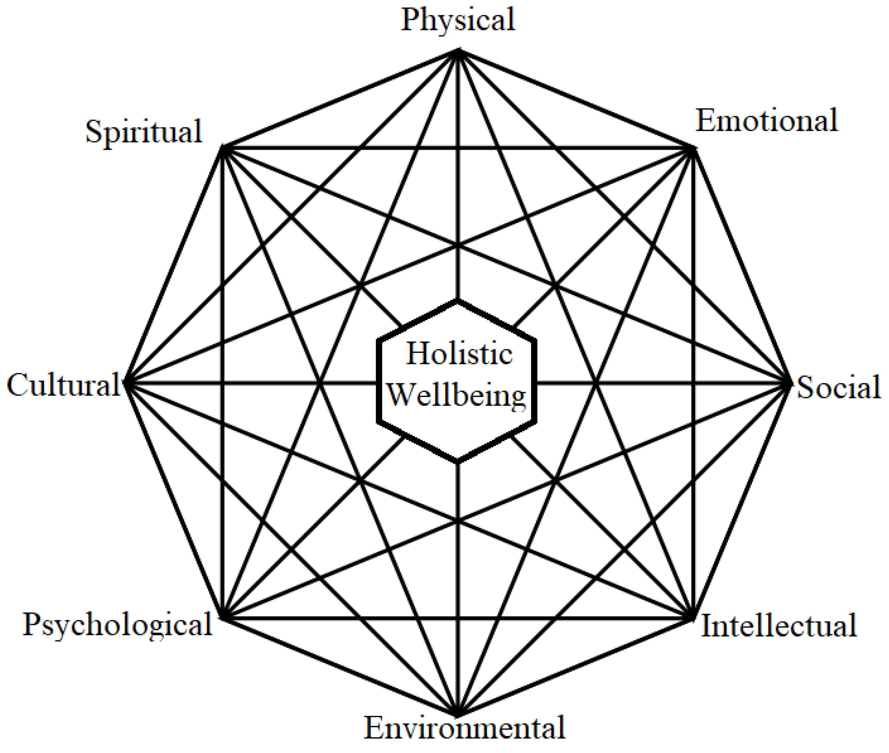

%%{
init: {
'theme': 'base',
'flowchart': { 'curve': 'natural' }
}
}%%
flowchart LR
T(Theory)
P(Phenomena)
D(Data)
T -- "Explanation" --> P
P -- "Abduction" --> T
P -- "Prediction" --> D
D -- "Generalization" --> P
Theory Construction Methodology
Felix Schönbrodt ![]()
Theory Construction Methodology
Where do theories come from?
- Falsificationism starts with a (tentative) theory, which is repeatedly tested, refuted, and refined.
- But where does the initial theory come from? “Flair”? Flash of inspiration in the shower?
- Popper did not care much about the first stage of creating theories - just about the later testing of theories.
Conjecture: We have a refined methodology¹ to test theories (e.g., experimental designs, statistical methods, preregistration, …). But we had (so far) no good methodology for constructing theories.
¹ “A scientific methodology is an ordered series of steps that assist a researcher in reaching a desired end state from a specified starting point.” (Borsboom et al., 2021)

TCM: A methodology for constructing theories
Phenomena: Stable and general features of the world in need of explanation. Can be understood as robust generalizations of patterns in empirical data. They are the explanatory targets for scientific theories (the explanandum). In psychology often called “effects”.
Data: Relatively direct observations. Refer to particular empirical patterns in concrete data sets rather than empirical generalizations (which would be phenomenona).
Theories: Something that explains phenomena of interest (the explanans). But what is a theory?
What is a theory?
Like so many words that are bandied about, the word theory threatens to become meaningless. Because its referents are so diverse - including everything from minor working hypotheses, through comprehensive but vague and unordered speculations,to axiomatic systems of thought - use of the word often obscures rather than creates understanding.Merton (1967, p. 39)
Maybe an easier question for the start: But what is not a theory?
What is not a theory? 1
(Note: While these features of a scholarly article do not constitute a theory, they might be important in their own right)
- References Are Not Theory
A manuscript that Robert Sutton edited had strong data, but all three reviewers emphasized that it had “weak theory” and “poorly motivated hypotheses.” The author responded to these concerns by writing a new introduction that added citations to many papers containing theory and many terms like “psycho-social theory,” “identity theory,” and “social comparison theory.”
But it still contained no discussion of what these theories were about and no discussion of the logical arguments why these theories led to the author’s predictions. The result was that this paper contained almost no theory, despite the author’s assertion that much had been added.
Solution:
Authors need to explicate which concepts and causal arguments are adopted from cited sources and how they are linked to the theory being developed or tested.
What is not a theory? 2
- Data Are Not Theory
Empirical evidence plays an important role in confirming, revising, or discrediting existing theory and in guiding the development of new theory. But observed patterns like beta weights, factor loadings, or consistent statements by informants rarely constitute causal explanations.
Kaplan (1964) asserted that theory and data each play a distinct role in behavioral science research: Data describe which empirical patterns were observed and theory explains why empirical patterns were observed or are expected to be observed.
Also: Theories do not explain data - theories explain phenomena!
What is not a theory? 3
- Lists of Variables or Constructs Are Not Theory
Papers […] often are written as if well-defined variables or constructs, by themselves, are enough to make theory. Sometimes the list of variables represents a logical attempt to cover all or most of the determinants of a given outcome or process.
Such lists may be useful catalogs of variables that can be entered as predictors or controls in multiple regression equations […], but they do not constitute theory.
Lists of constructs (without an explicit definition of their causal relationship) often are called a framework.
What is not a theory? 4
- Diagrams (Alone) Are Not Theory
This is an extension of (3) “List of constructs”: Put each construct that you deem relevant into a box and draw arrows between all constructs (because in a complex system everything is connected with everything)
. . .

What is not a theory? 4

What is not a theory? 4

What is not a theory? 4

What is not a theory? 4
- Diagrams (Alone) Are Not Theory
Diagrams or figures can be a valuable part of a research paper but also, by themselves, rarely constitute theory. Probably the least theoretical representations are ones that simply list categories of variables such as “personality,” “environmental determinants,” or “demographics.”
More helpful are figures that show causal relationships in a logical ordering, so that readers can see a chain of causation or how a third variable intervenes in or moderates a relationship. Also useful are temporal diagrams showing how a particular process unfolds over time. […]
As Whetten (1989) suggested, while boxes and arrows can add order to a conception by explicitly delineating patterns and causal connections, they rarely explain why the proposed connections will be observed. Some verbal explication is almost always necessary.
What is not a theory? 5
- Hypotheses (or Predictions) Are Not Theory.
Hypotheses can be an important part of a well-crafted conceptual argument. They serve as crucial bridges between theory and data, making explicit how the variables and relationships that follow from a logical argument will be operationalized. […]
Hypotheses do not (and should not) contain logical arguments about why empirical relationships are expected to occur. Hypotheses are concise statements about what is expected to occur, not why it is expected to occur.
But, then:
What is a theory?
Theories as causal explanations
“It may be said… that an explanation is not fully adequate unless its explanans, if taken account of in time, could have served as a basis for predicting the phenomenon under consideration…
It is this potential predictive force which gives scientific explanation its importance: Only to the extent that we are able to explain empirical facts can we attain the major objective of scientific research, namely not merely to record the phenomena of our experience, but to learn from them, by basing upon them theoretical generalizations which enable us to anticipate new occurrences and to control, at least to some extent, the changes in our environment”Hempel & Oppenheim, 1948, (p. 138)
TCM: A methodology for constructing theories
%%{
init: {
'theme': 'base',
'flowchart': { 'curve': 'natural' }
}
}%%
flowchart LR
T(Theory)
P(Phenomena)
D(Data)
T -- "Explanation" --> P
P -- "Abduction" --> T
P -- "Prediction" --> D
D -- "Generalization" --> P
Phenomena: Stable and general features of the world in need of explanation. Can be understood as robust generalizations of patterns in empirical data. They are the explanatory targets for scientific theories (the explanandum). In psychology often called “effects”.
Data: Relatively direct observations. Refer to particular empirical patterns in concrete data sets rather than empirical generalizations (which would be phenomenona).
Explanatory Theories are constructed to explain the empirical phenomena that are evidenced by data (i.e., they are the explanans). Explanatory theories can be expressed in terms of a set of linked propositions referring to latent psychological constructs. At least one of these propositions expresses a general principle.
“theory T putatively explains phenomenon P” means “if the world were as T says it is, P would follow as a matter of course.” Although this notion of explanation is arguably incomplete, it has the advantages of being close to the commonsense understanding of the concept and being easy to implement in a formal model—namely by creating a virtual world in which theory T is true and showing that this world will indeed produce phenomenon P.
Theory: Definition
What is an (explanatory) theory?
A theory is a set of statements about the relationship(s) between two or more constructs with a nomological (i.e. law-like) character. (explanans)
What is an explanation?
In the productive explanation framework, a theory T putatively explains a phenomenon P if and only if a formal model of the theory T produces a statistical pattern representing the empirical phenomenon P.
Let’s practice!
Elements of a theory
- Phänomen: Eine Eigenschaft der Welt, die hinreichend wenig flüchtig ist, so dass wir diese wahrnehmen und beschreiben können (Explanandum einer Theorie)
- Begriff / Konzept: Semantische Einheit (Konzept), die die Merkmale eines Gegenstandes oder Sachverhaltes vereint. ≠ Wort/Wortmarke
- Relationship
- Modell: Vereinfachte Abbildung eines Ausschnitts der Wirklichkeit. Alle Strukturen, die die Sätze einer Theorie erfüllen, sind Modelle dieser Theorie. Oder andersherum ausgedrückt: Eine Theorie kann meist in verschiedenen Modellen implementiert werden, die alle kompatibel zur Theorie sind.
- Operationalisierung: Präzise Angabe (inkl. Begründung), wie ein Begriff (s.o.), zu messen ist.
- Daten: Daten sind öffentliche Aufzeichnungen, die durch Messungen und Experimente erzeugt werden und als Beweis für die Existenz oder Merkmale von Phänomenen dienen. (Woodward, 2009). Daten enthalten das Phänomen, an dem wir interessiert sind, aber auch Rauschen (Messfehler, Verzerrung durch den Experimentator, Transkriptionsfehler). Deshalb erklären Theorien die Phänomene, nicht die Daten. (Fried, 2021)
Exercise
flowchart LR P[Phenomenon] C["Concept (Definition)"] T[Theory] M[Model] O[Operationalization] D[Data]
An example
Note
Lee, D. G., Daunizeau, J., & Pezzulo, G. (2023). Evidence or Confidence: What Is Really Monitored during a Decision? Psychonomic Bulletin & Review, 30(4), 1360–1379. https://doi.org/10.3758/s13423-023-02255-9
Empirical Hurdles for Confidence Models to Explain
The literature on choice confidence has exposed a variety of different empirical findings. Many of these findings are so robust that it has been proposed that any worthy model of confidence should be able to account for them (Pleskac & Busemeyer, 2010). We here put the cDDM to the test and note that it predominantly passes these hurdles:
TCM: Concrete Steps
- Identifying relevant phenomena
- Formulating a prototheory
- This includes defining the constructs as a first step
- Developing a formal model
- Checking the adequacy of the formal model
- Evaluating the overall worth of the constructed theory
Note
This methodology is “structured creativity” - you are allowed to tinker around as much as you like. The five steps are mere tools that help to structure your creative process.
TCM: Step 1
- Identifying relevant phenomena
„The phenomena most useful in theory building are not necessarily the most spectacular ones. Instead, it is vitally important to select phenomena that are well established, or even self-evident, because a solid foundation is essential to successful theory construction.“
TCM: Step 2
- Formulating a prototheory
„Of the steps in TCM, the step of generating prototheories is the least methodologically developed. One methodological approach that is available is analogical abduction: If one finds a similar set of phenomena in another field that is better understood, then one can “borrow” explanatory principles from that field to inform one’s own.“
TCM: Step 3
- Developing a formal model
TCM: Step 4
- Checking the adequacy of the formal model
- “To investigate this question, one must parse the phenomena in the same formal language as the theory. This means that the phenomena themselves have to be formalized.”
- Before you observe any real data, ask (and test): Does the model even work in principle?
- Simulate data from the model
- Does it produce the target phenomena?
- Sensitivity analysis: What happens if parameters of the model are changed / pushed to the extreme? When does it break?
- Which phenomena can be actually produced by the model? (Assuming that multiple phenomena are predicted)
- Which choices of the model are arbitrary?
- Sensitivity analysis: How robust is the explanation across (realistic) changes of parameter settings?
- Explanatory relevance: Are the explanatory principles actually necessary to explain phenomena? (e.g., it could happen that you remove an element in the model, and the phenomenon still is produced.)
TCM: Step 5
- Evaluating the overall worth of the constructed theory
Creative hypothesis generating in psychology: Some useful heuristics
TODO
Resources
Speicher
“Makeism”
What is makeism?
Makeism: The view that computationalism implies that (a) it is possible to (re)make cognition computationally; (b) if we (re)make cognition then we can explain and/or understand it; and possibly (c) explaining and/or understanding cognition requires (re)making cognition itself.
Note that it is especially easy for makeists to fall into map-territory confusion - mistaking their modeling artefacts for cognition itself - due to the view that the made thing could be cognition.
➙ “Design and development as a research methodology” (Bisig & Pfeifer, 2008)
Is the demiurgic approach “makeism”?
| Makeism | Demiurg |
|---|---|
| (a) it is possible to (re)make natural phenomena computationally | Yes - the systemic structure can be recreated as a (simplfied) model. |
| (b) (Re)makeing a natural phenomenon is sufficient for being able to explain it | It is an explanation (cf. productive explanation). But its quality is only as good as its assumptions*. |
- “I assume an omnipotent agent, which knows everything about the world, its current state, and its history. With unlimited computing power, it determines the optimal action.”
About simulations as tools
Computer simulations support and extend a scientist’s thinking capacity, and enable computerised ‘thought experiments’ (R. Cooper, 2005) to reason through ‘what ifs’ and answer questions like ‘how possibly’. These simulations […] are necessarily abstract and idealised
Underdeterminism of theories
“[…] first, one and the same problem can be computed by different algorithms, and second, one and the same algorithm can be physically realised in different ways.
This implies that we are dealing with massive underdetermination of theory by data: i.e., if we observe behaviours consistent with a computational level theory, we cannot infer which algorithms or neural processes underlie the behaviour.
Comparison chart of methodologies
| TCM | Demiurg | |
|---|---|---|
| Starting point | set of relevant phenomena in need for explanation | an (evolutionary) problem that needs to be solved (v1) + prior knowledge about precursing organisms (v2) |
| Primary heuristic for searching explanations | Look for analogous models/phenomena in other scientific disciplines | Look at existing capabilities of simpler organisms (biology); search for the simplest implementation (given existing biological structures) |
| End state | A theory that offers a putative explanation of the phenomena |